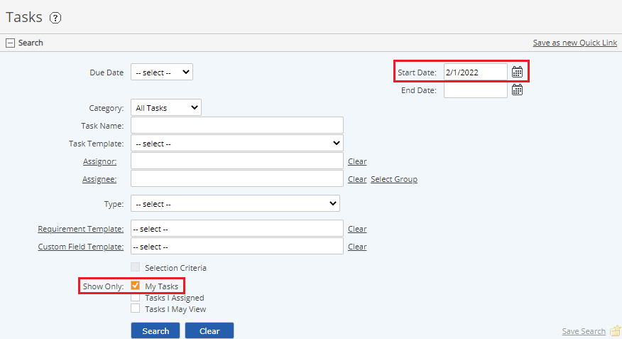

Select the Tasks section in the Tasks and Workflows page to view, search and filter tasks. You may view information for completed tasks as well as open tasks.
Task options available to you depend on your permissions. Permissions to view, create or modify tasks may be granted for specific parts of the System Model. So you may have the ability to view all tasks related to your facility, for example, or only your own tasks, depending on your permission.
Tasks are displayed according to the last task search criteria used. If you have not performed any searches, the initial default view shows:
Tasks whose due date is today or later (as indicated by the Start Date in the Search pane).

To view tasks due earlier than today, tasks not assigned to you, or to search for specific tasks, set the search criteria in the Search pane to apply the appropriate task filter. See Search Tasks.
Only the most recent instance of a recurring task is displayed with the default search criteria. Multiple instances or overdue instances are not seen unless you specify a date range with both a Start Date and End Date in the search criteria. Multiple task occurrences can also be seen in the task calendar.
You may also view tasks related to a specific object in the System Model by accessing the Tasks option on the right-click menu for an object.